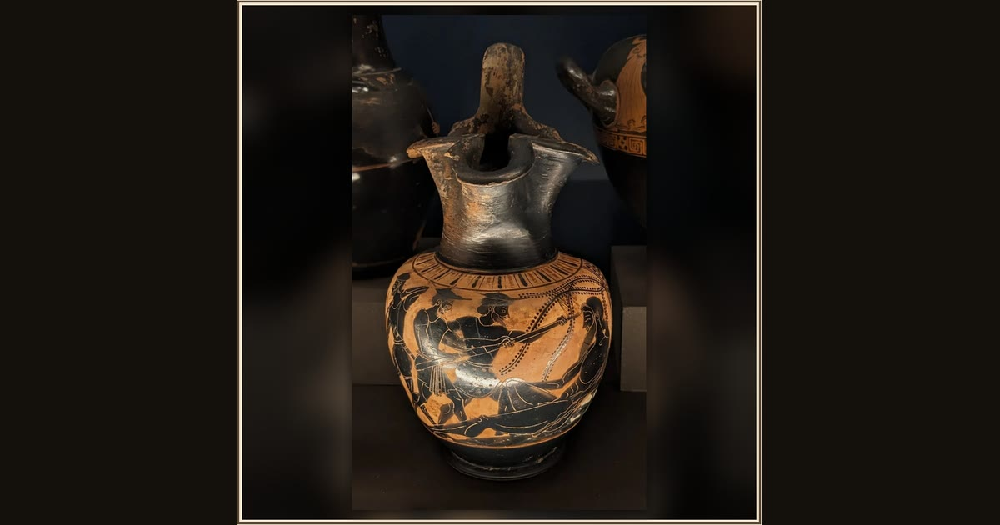

Oinochoe with the blinding of Polyphemus
Theseus Painter (attrib.), Attic Greek · c. 510–490 BC · Musée du Louvre · Paris, France
Trapped in a cave, Odysseus and his men sharpen a giant stake and drive it into the one eye of the sleeping, wine-drunk cyclops Polyphemus. Explore its place in Book IX of the Odyssey.